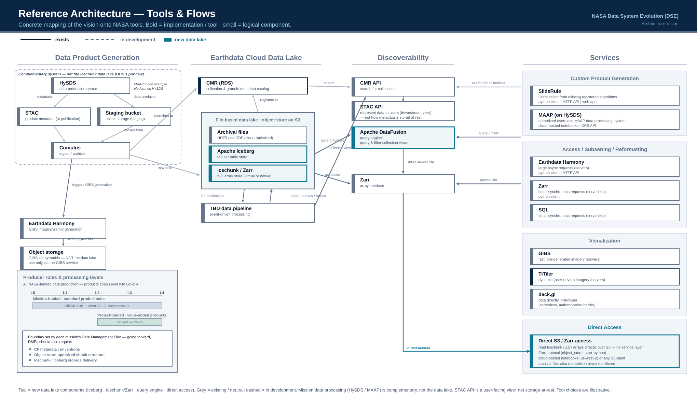

NASA EARTHDATA CLOUD DATA SYSTEM EVOLUTION (DSE)
Architecture Vision
From "lift and shift" granules to a unified, cloud-native data lake.
Working draft · June 2026 · JP Swinski, Sean Harkins & Aimee Barciauskas
End-to-End Architecture Vision
From "lift and shift" granules to a unified, cloud-native data lake with integrated services.
1 · Mission Products
- Problem: Mission Products are produced in mission silos today, with little cross-mission consistency
- Solution: Additional requirements for cloud-friendly chunking + storage and standards (CF)-compliant metadata
- Assumption: Archival format for L0-L2; higher levels may be produced in cloud-native formats (w/ requirement a repeatable pipeline)
2 · Data Lake
- Archival data files will be archived in cloud object storage
- Event-driven pipelines (S3 manifests and new object notifications → queue → processing) will build analysis-ready data products (ARD)
- Tabular data stored in Apache Iceberg; multi-dimensional arrays stored in Icechunk (Zarr)
3 · Discoverability
- Collections will be discoverable via CMR or via query engine provider (see next box)
- CMR collection records will store location references to "views" into the collection (entry points for query and access to entire collection)
- Find & compare datasets, for example search for all precipitation datasets. Consistent metadata standards will help users pick one.
4 · Queryability
- A DataFusion query-engine provider over every collection or collection views
- Users can query across collections and within a collection
- Collection "views" open many files as one logical collection
5 · Data Services
- Subsetting & reformatting (Harmony, SlideRule)
- Custom product generation via algorithm services (SlideRule, MAAP)
- Access + Analytics (notebooks + sync/async HTTP)
- Visualization
Access modes: cloud-hosted notebooks (co-located in AWS us-west-2) · HTTP endpoints · web browsers
Cross-cutting principle: uniform data models (Zarr/Icechunk for n-D, Iceberg for tabular) enable services to be used across many collections.

This slide stays an editable SVG: diagrams_svg/07_reference.svg
Why Now — From Fragmentation to a Unified Vision
A 3-5 year transition: cloud-native production for new data, plus virtualization of existing collections.
TODAYmission-centric & fragmented
- Each mission picks its own formats & chunking — little cross-mission consistency
- Suboptimal HDF5 granules; even cloud-optimized files fall short
- Scattered metadata makes comparing similar products hard — data fusion is painful
- No structural incentive for missions to invest in downstream usability
- Discovery to use is manual: find a collection, then download & preprocess every file
- SlideRule overloaded with subsetting; CMR strained by analytics & AI-agent traffic
VISIONunified, cloud-native data lake
- Mission data product requirements: consistent cloud-friendly chunking + storage / metadata / formatting standards
- One data lake: Icechunk (n-D / Zarr) + Iceberg (tabular), leveraging virtual chunk-manifest indices
- Federated query engine (DataFusion): discovery → cross-collection → within-collection
- Uniform data models → build a service once, reuse it for every dataset
- SlideRule and Harmony leverage chunk-manifest indices for product generation and subsetting
- Distributed CMR data lake scales for analytics, consumer & AI-agent traffic
3-5 year transition: virtualize existing collections (via DAACs / external teams) while shifting new missions to cloud-native production.
Roles & Responsibilities
Multiple teams, one shared interface.
Data Producer Teamsall NASA-funded data production (mission, science investigator & DAAC)
- All NASA-funded teams produce across Levels 0–4: mission-funded standard + project-funded value-added products
- Could share one platform (e.g. MAAP) — today they use distinct tools
- Scope & standards documented in each mission's Data Management Plan (DMP)
- DMPs should require: CF conventions, object-store-optimized chunking, Icechunk / Iceberg delivery
- Publish chunk indices (virtual Icechunk manifests) to the shared stores
- Register collections + collection-level metadata so products are discoverable & queryable
publish →
Shared Data Lakethe contract / interface between the teams
- CF conventions — the common metadata standard
- Apache Iceberg — tabular data + indices
- Icechunk / Zarr — n-D array stores
- Virtual chunk-manifest indices — published by producers → queryable
- Collection & metadata registry — discovery across & within collections
→ consume
Cross-Product Services Teamdata lake consumers
- Operate the shared Iceberg + Icechunk stores and the query engine
- Discoverability & queryability (CMR + DataFusion federation)
- Subsetting & reformatting (Harmony); on-demand products (SlideRule)
- Analytics & visualization services
- Build once on uniform data models — reuse across every dataset
Additions to reference architecture
AI tooling for mission product teams
Guidance on creating optimized archival formats and Icechunk / Iceberg stores.
IO layer choice
What matters for efficient (fast, cost-minimizing) access is the object-store IO-layer library: 2 high performance options are
object_store used in
zarr-python and
h5coro used by SlideRule. Both offer advantages (next slide).
Caching
Within reason, caching should be a feature of every data service, but the implementation is out of scope for this document.
Object-store IO layer — what drives efficient, low-cost access
The IO library sets the number and size of S3 GET requests and compute time — i.e. the cost of access. The two are complementary.
Rust object_store
cloud-native · general purpose
- Unified async API over S3 / GCS / Azure (Apache Arrow project)
- Powers the Rust data ecosystem: DataFusion, Iceberg, Icechunk / Zarr
- Concurrent range reads + connection pooling for chunk-level access
- Best for cloud-native formats — Zarr, Parquet, Iceberg tables
h5coro
cloud-optimized HDF5 · file-level
- Reads HDF5 directly from S3 without the HDF5 library
- Minimizes requests by smart caching of metadata / B-trees
- Efficient access to existing archival granules — no reformatting
- File-level and HDF5-specific by design
Bottom line: object_store for cloud-native stores; h5coro for legacy HDF5 in place — a cost-vs-migration tradeoff.
Discussion questions
1 — Consolidate the interfaces?
Should investment be consolidated into accessing data via the Zarr / DataFusion interfaces, ultimately divesting from HDF-specific tooling?
2 — The future of HDF
Would the natural outcome be moving away from HDF entirely? Or does NASA see archival file formats as having a role indefinitely?
For discussion & next steps
Align internally
Brief leadership on the discussion and confirm next steps.
Document the strategy (roadmap)
Outline the transition plan and long-term objectives behind this vision.
Socialize the vision
Share the architecture vision with leadership to align on goals.
Open questions
ARD storage format (archival + virtual Icechunk vs. native Zarr Icechunk) · which services NASA maintains for which datasets · funding & incentives for cloud-native mission product requirements.